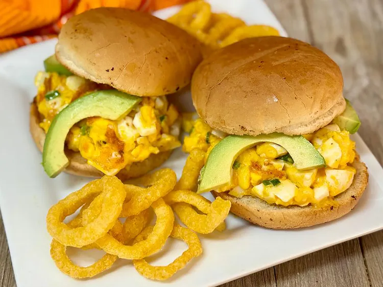

Crispy Egg Salad

Description
This crispy egg salad is unlike any egg salad you've ever had—crispy on the outside, creamy on the inside, with a little bit of heat. If you're a fan of a spicy dill flavor profile, feel free to add dill pickle relish.
Ingredients
- 2 tablespoons mayonnaise
- 2 teaspoons Sriracha
- 1/2 cup sharedded pepper Jack cheese
- 1 small green onion, chopped
- 6 large hard boiled eggs, peeled and chopped
- salt and freshly ground black pepper to taste
- cooking spray
- 4 hamburger buns
- 1 small avocado, sliced
Steps
-
Whisk mayonnaise, Sriracha, pepper Jack cheese, and green onion together in a bowl until evenly combined. Gently fold in chopped egg; season with salt and pepper.
-
Heat a large nonstick skillet over medium-high heat. Lightly spray skillet with non-stick cooking spray.
-
Place 1/4 of egg salad in the skillet. Lightly smash egg salad down with a spatula. Cook for 1 minute. Flip mixture over and cook 1 minute more. Transfer the patty to a plate immediately. Repeat with remaining egg salad.
-
Serve on buns or toast; top with sliced avocados.